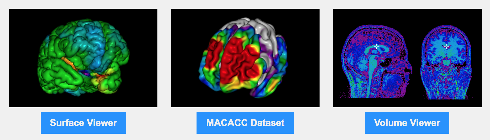
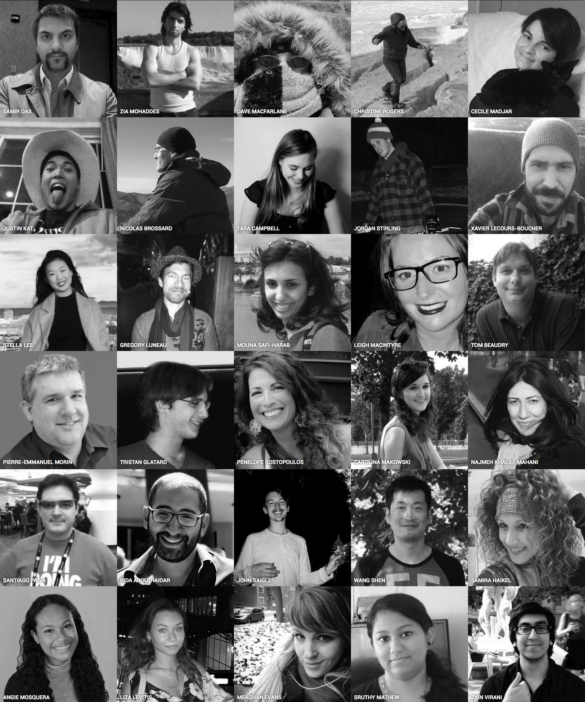

Longitudinal Acquisition, Storage and Curation, Interoperability, Reproducibility, Transfer, Anonymization, Security, Privacy, Ethics, APIs, Validation, Quality Control, Protocol Checking, Preprocessing, Analysis, HPC,
Provenance, Ontological Standarization,
Data Harmonization, Upgrades, Maintenance, Bug Fixes, User Interface, Javascript, Bootstrap, Tracking, Extensibility, Data Management, Summary Statistics, Workflows,
Development, Tool Integration, Data Sharing, Download, Multi-Modal Linking, Querying, Image Processing, Visualization, Networking, System Administration, Partnerships, Funding, HR
...No big deal!
..a set of web-based 3D visualization tools primarily used for viewing neurological data i.e. MRI scans.
It allows for real-time manipulation and analysis of 3D neuroimaging data through any modern web browser. TRY ME!
|  |
Thank you!Acknowledgements: Alan Evans, Alex Zijdenbos, Dario Vins, Jonathan Harlap, Matt Charlet, Andrew Corderey, Sebastian Muehlboeck, Reza Adalat, Louis Collins, Vladimir Fonov, Marc Rousseau, Mia Petkova, Rathi Gnanasekaran, David Brownlee, Tarek Sherif, Pierre Rioux, Nic Kassis, Leigh MacIntyre, Claude Lepage, Ilana Leppert, Natasha Beck, Tristan Glatard, Bert Vincent, Lindsay Lewis, Najma Mahani, Elodie Portales-Casamar, Alden Woodward, Sylvain Milot, Jean Francois Malouin, Sylvain Baillet, Daniel Kroetz, Martin Weiss, Mathieu Desrosier, Jason Karamchandani, Amit Bar-Or, Ted Fon, John Brietner, Derek Lo, Patrick Bermudez, Chris Steele, Pamela Patterson and one of my favourites: Pierre Bellec! LORIS team on left |